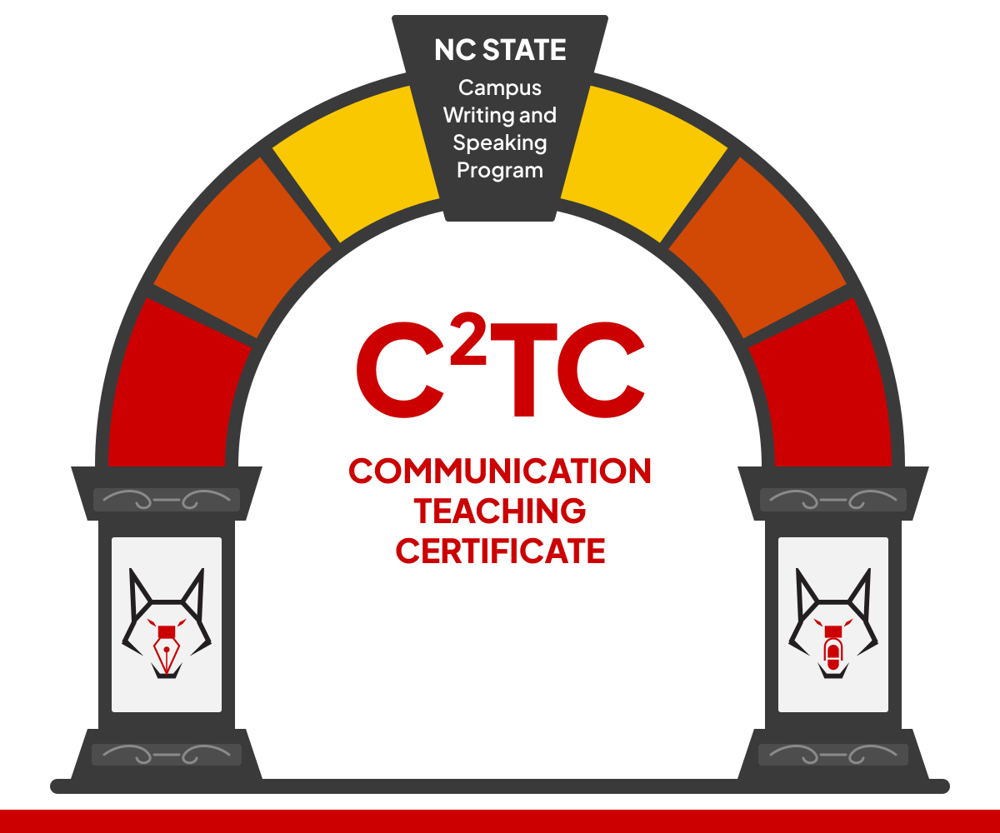

NC State Campus Writing and Speaking Program
C²TC
Communication Teaching Certificate
A free, asynchronous certificate program for NC State faculty who want to deepen their expertise in writing, oral, and digital communication pedagogy.

CWSP events
CWSP sessions are open to all NC State instructional faculty and graduate students who teach. You do not need to be working on a certificate to join one. Sessions marked as part of C²TC connect to the certificate modules, and each one stands on its own.
Three specialized certificates
Choose one focus, or earn all three
Each certificate stands on its own. Complete all three to earn the C²TC Certificate of Advanced Communication Pedagogy. During the pilot, no certificate has a prerequisite.
Written Communication Instruction
Research-based frameworks for teaching writing across disciplines. Covers writing transfer, feedback and assessment, discipline-specific genre instruction, and assignment design.
Explore certificateDigital Communication Instruction
Frameworks for teaching digital rhetoric, multimodal composition, and digital project design. Covers digital literacies, assessment, and the ethics of digital communication.
Explore certificateOral Communication Instruction
Principles of public speaking instruction, oral communication across disciplines, and assessment of oral performance. Modules in development.
Learn moreWhat you gain
Built for faculty who teach communication
C²TC is for faculty who already take their teaching seriously and want more sophisticated tools. It starts from what you already do well. Each certificate offers advanced professional development grounded in communication studies research.
Knowledge and skills
- – Research-based strategies for teaching written, oral, and digital communication
- – Assessment tools and rubrics for communication-intensive assignments
- – AI-assisted instruction and multimodal composition frameworks
- – Inclusive and accessible design for diverse learners
Recognition and community
- – Specialized certificates and digital badges for professional portfolios
- – Cross-disciplinary cohort of faculty and graduate instructors working through the certificate together
- – Opportunity to present capstone projects at the OFE Annual Conference
- – Shared repository of faculty-created teaching materials, rubrics, and capstone artifacts
Program resources
Cohort and repository
Cohort
Four optional synchronous sessions each semester give participants time to workshop assignments, share capstone work, and build a cross-disciplinary network. We designed them especially for new faculty, graduate instructors of record, and teaching faculty. Everyone is welcome.
Learn about the cohortRepository
A shared, growing collection of teaching materials from C²TC participants: assignment prompts, rubrics, syllabi, and capstone projects contributed by instructors across disciplines.
Browse the repositoryRelated program
Looking for curriculum-level support?
C²TC works at the level of the course you teach. WOLF (Written and Oral Literacy Facilitation) works at the level of the curriculum: CWSP partners with a department, program, or college to build writing and speaking into its curriculum over two to three years. The two programs are designed to work together.